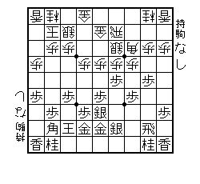
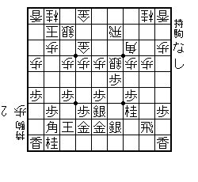
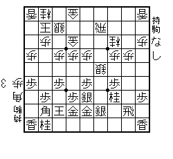
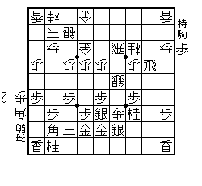

まずはぱぱぐまさんの棋譜をお手本に載せます。ここにみなさんの棋譜をプラスしていきます。
「将棋最前線の９０番を手本に指しました」となると９０番のすぐ後に追加していきます。（笑）
時系列が壊れますが、戦形分類を優先することにします。

定跡は常に変化している。プロは日夜研究しているので
徐々に進化してくる。別段最新変化を知っているからと
いって勝敗に直結するわけではないが、高段の将棋を観戦する
ときなど楽しみが増加するのが良い。
上の図から、７４歩、３７桂、６３金と進む。７４歩が先の方が
確実らしい。（なおこれは所司プロの 将棋定跡最先端 振り飛車編
を見ている。詳しい変化を見たい方は購入してあげてくださいまし。＾＾）
さらに２４歩、同歩、（同角も一局詳しくのってます。）４４歩、
同銀、４５歩と進む。この局面はこの下に。

ここでの最善手は４５同銀。５３銀は後手不満になる変化が
みつかっているようだ。さらに４５同銀にたいしては、３３角
成りと単に４５同桂と取るのがあり、どちらも一局とのこと。同桂のほ
うは８８角成り、同玉、８４桂の変化で勝負になるようだ。
それで今回取り上げたいテーマはこの４５同銀に３３角成り、
同桂、８８角のほう。この図を下に掲げる。僕はここで
５５歩が定跡だと思っていたが、それは古いらしい。（笑）

この局面が今回とりあげたかった局面。てっきり
５５歩、同角、４３飛車となるのかと思っていたら、
それは２４飛車、５４銀、４４歩、５３飛車で居飛車が
良いらしいのだ。２００６年４月の時点での最先端定跡は
何と単に４３飛車と浮く手だった。（みんな知ってた？）
先手はここで２４飛車。後手は最強の応手４７歩。図は下。

この後は４７同銀が最善となり、１５角と打つようだ。
変化はまだまだ続く。（相当終盤まで書いてます。）
８８角に単に４３飛車。見かけたら定跡の最先端でーす＾＾
| 四間飛車に穴熊編 | 最新形の攻防、そのまま定跡 |
| papagumaの将棋最前線その10 | ぱぱさんの３６歩型穴熊に四間飛車が急襲。自然に対応して勝ちな一局。 |
| papagumaの将棋最前線その14 | 四間飛車に穴熊。驚愕の仕掛け。光速の寄せ。 |
| papagumaの将棋最前線その33 | 形は大切です！の見本。四間飛車に居飛車穴熊。 |
| papagumaの将棋最前線その43 | 四間飛車４３金型に右４六銀で勝つ！ |
| papagumaの将棋最前線その44 | 対藤井システム、光速の寄せ！ |
| papagumaの将棋最前線その48 | 対四間飛車最新指定局面戦！ |
| papagumaの将棋最前線その54 | 藤井システム最前線。 |
| papagumaの将棋最前線その69 | 藤井システム。 |
| papagumaの将棋最前線その70 | 相穴熊。 |
| papagumaの将棋最前線その73 | 対四間飛車指定局面戦。 |
| papagumaの将棋最前線その76 | 対四間飛車。 |
| papagumaの将棋最前線その90 | 相穴熊。 |
| papagumaの将棋最前線その92 | 対54銀型四間飛車。 |
| papagumaの将棋最前線その100 | 無冠の帝王HAHAHAHAHAさん登場 |
| papagumaの将棋最前線その101 | 対四間飛車、完璧編 |
| papagumaの将棋最前線その109 | 対四間飛車、効いた３五歩 |
| papagumaの将棋最前線その110 | 対四間飛車、序盤の工夫とぴたりの詰み |
| papagumaの将棋最前線その111 | 対石田流を即効迎撃作戦 |
| papagumaの将棋最前線その115 | 対四間飛車 |
| papagumaの将棋最前線その121 | 対四間飛車 |
| papagumaの将棋最前線その133 | 対四間飛車。理論的な将棋 |
| syunaidar伝説 | 相穴熊 |
| 羽生の四間飛車 | ２００６年王将戦第２局 |
| 相穴熊 | ぱぱさんの快勝譜 |
| 穴熊講座 | 最先端の仕掛けにせまる |
| 対三間 | ５筋位取り対穴熊 |
| 対三間 | 穴熊 |
| 対四間 | 松尾流穴熊 |
| 対四間 | 新型ボナンザと近代将棋で相穴熊 |
| 対四間 | 藤井システム最前線１ |
| 対四間 | 藤井システム最前線２ |
| 対向かい飛車 | 王位戦第２局２００６ |
| 対四間 | 藤井システム最前線3 |
| 対四間 | 鈴木四間飛車 |
| 対四間 | 杉本四間飛車 |
| 対四間 | 名人戦Ｂ２ |
| 対四間 | 王位戦第１局２００６ |
| 対四間 | 変則四間飛車。羽生の順位戦より |